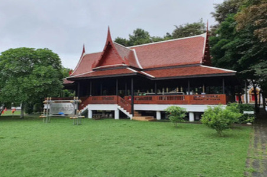
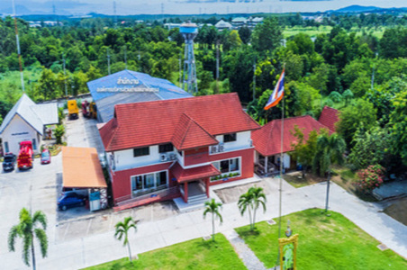

สื่อธรรมะน่าเรียนรู้
สื่อธรรมะน่าเรียนรู้
การปฏิบัติตามหลักศีลธรรม เช่น ฆราวาสธรรม 4 (สัจจะ, ทมะ, ขันติ, จาคะ) เพื่อความสงบเย็นในใจและการดำเนินชีวิตที่สมดุล
พุทธประวัติประวัติพระพุทธเจ้า
"ศาสนาพุทธ" เป็นศาสนาประจำชาติไทยของเรา แล้วมีสักกี่คนเอ่ย...ที่ทราบถึงประวัติของ "พระสัมมาสัมพุทธเจ้า" ผู้ทรงเป็น "พระศาสดา" ของ "พระพุทธศาสนา" ประวัติพระพุทธเจ้า มาฝากกัน
พระพุทธเจ้าทำนายดวงชะตา
พุทธทำนายในที่นี้ จะกล่าวถึงเรื่องที่พระพุทธเจ้าทรงทำนายพระสุบิน (ความฝัน) ของพระเจ้าปเสนทิโกศล จำนวน 16 ข้อ ซึ่งพระพุทธเจ้าทรงทำนายว่า เหตุการณ์เหล่านั้นจะเกิดขึ้น
วันสำคัญทางพุทธศาสนา
วันสำคัญทางพระพุทธศาสนาอาทิเช่น วันมาฆบูชา วันอาสาฬหบูชา วันเข้าพรรษา/ออกพรรษา โดยกิจกรรมหลักคือทำบุญตักบาตร ฟังธรรม และเวียนเทียน
บทสวดมนต์ข้ามปี
การสวดมนต์ข้ามปีสามารถทำได้ง่ายๆ ที่บ้านหรือที่วัด โดยเรียงลำดับบทสวดมนต์สำคัญเพื่อเสริมความเป็นสิริมงคล เริ่มต้นศักราชใหม่ด้วยความสงบและมีสติ
เว็บเพื่อนบ้าน
เว็บเพื่อนบ้าน
เว็บเพื่อนบ้าน ธรรมะ องค์กรการบริหาร การศึกษา
วัดพระธรรมกาย - ปทุมธานี
วัดพระธรรมะกาย ตั้งอยู่ ณ ต.คลองสาม อ.คลองหลวง จ.ปทุมธานี

เว็บเพื่อนบ้าน ๐๒
วัดพันเสด็จนอก - ชลบุรี
โดยพระครูสาทรวรกิตติ์ ๖๙๐/๕ ม.๑๐ ต.เขาคันทรง อ.ศรีราชา จ.หวัดชลบุรี

เว็บเพื่อนบ้าน ๐๓
อบต.เขาคันทรง - ชบุรี
องค์การบริหารส่วนตำบลเขาคันทรง 19 หมู่8 ต.เขาคันทรง อ.ศรีราชา จ.ชลบุรี
โรงเรียนบ้านเขาคันทรง
โรงเรียนบ้านเขาคันทรง ตั้งที่ 495 ม.4 ตำบลเขาคันทรง อำเภอศรีราชา, 20110
สื่อธรรมะ
นิทานชาดก(ในรูปแบบเสียง) สาระธรรมะ
บทสวดมนต์
•
ข้ามปี
รอการอัพเดทข้อมูล รอการอัพเดทข้อมูล รอการอัพเดทข้อมูล
รอการอัพเดทข้อมูล
บทสวดมนต์
ยอดพระกัณฑ์
ไตรปิฎก
รอการอัพเดทข้อมูล รอการอัพเดทข้อมูล รอการอัพเดทข้อมูล
รอการอัพเดทข้อมูล
บทสวดมนต์
ยอดพระกัณฑ์
ไตรปิฎก
รอการอัพเดทข้อมูล รอการอัพเดทข้อมูล รอการอัพเดทข้อมูล
รอการอัพเดทข้อมูล
สื่อธรรมะ
สดุดีธรรมะ(ในรูปแบบเสียง) สาระธรรมะ
บทสวดมนต์
•
ข้ามปี
รอการอัพเดทข้อมูล รอการอัพเดทข้อมูล รอการอัพเดทข้อมูล
รอการอัพเดทข้อมูล
บทสวดมนต์
ยอดพระกัณฑ์
ไตรปิฎก
รอการอัพเดทข้อมูล รอการอัพเดทข้อมูล รอการอัพเดทข้อมูล
รอการอัพเดทข้อมูล
บทสวดมนต์
ยอดพระกัณฑ์
ไตรปิฎก
รอการอัพเดทข้อมูล รอการอัพเดทข้อมูล รอการอัพเดทข้อมูล
รอการอัพเดทข้อมูล